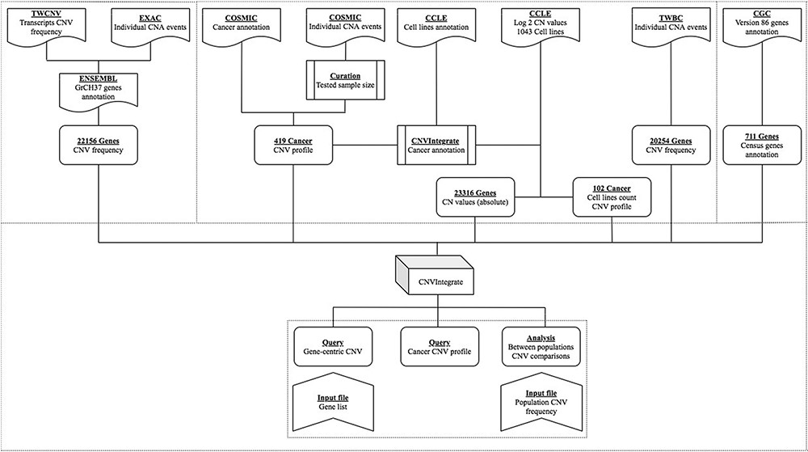
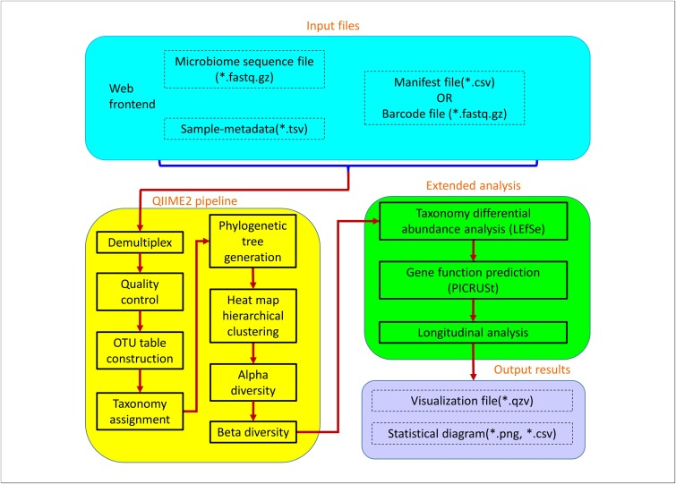
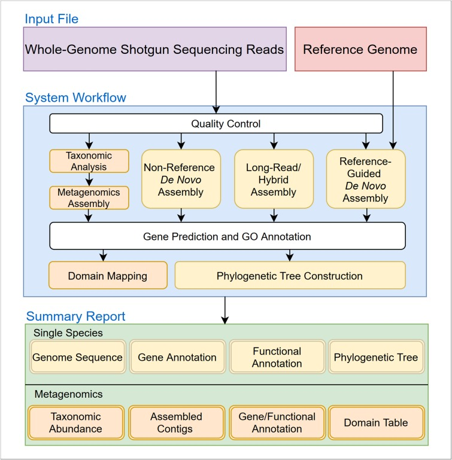
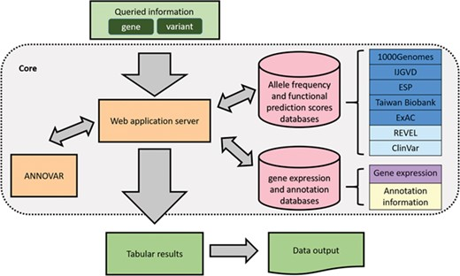
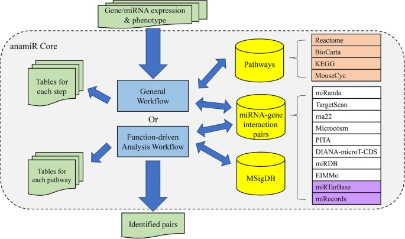
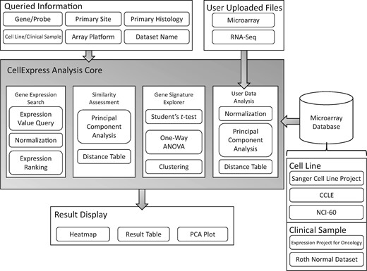

CNVIntegrate
The first multi-ethnic database for identifying copy number
variations associated with cancer
Chattopadhyay, A., Teoh, Z. H., Wu, C. Y., Juang, J. M. J., Lai,
L. C., Tsai, M. H., ... & Chuang, E. Y. (2021). CNVIntegrate: the
first multi-ethnic database for identifying copy number variations
associated with cancer. Database, 2021.

EasyMAP
An online platform for analyzing 16S ribosomal DNA sequencing data
Hung, Y. M., Lu, T. P., Tsai, M. H., Lai, L. C., & Chuang, E. Y.
(2021). EasyMAP: A user-friendly online platform for analyzing 16S
ribosomal DNA sequencing data. New Biotechnology, 63, 37-44.

MiDSystem
A comprehensive online system for de novo assembly and analysis of
microbial genomes
Lee, C. Y., Lee, Y. F., Lai, L. C., Tsai, M. H., Lu, T. P., &
Chuang, E. Y. (2021). MiDSystem: A comprehensive online system for
de novo assembly and analysis of microbial genomes. New
Biotechnology, 65, 42-52.

VariED
An integrated database of variants and gene expression profiles
for genetic diseases
Lee, C. Y., Chattopadhyay, A., Chiang, L. M., Juang, J. M. J.,
Lai, L. C., Tsai, M. H., ... & Chuang, E. Y. (2019). VariED: the
first integrated database of gene annotation and expression
profiles for variants related to human diseases. Database, 2019.
ISO 690

anamiR
Integrated analysis of MicroRNA and gene expression profiling
Wang, T. T., Lee, C. Y., Lai, L. C., Tsai, M. H., Lu, T. P., &
Chuang, E. Y. (2019). anamiR: integrated analysis of MicroRNA and
gene expression profiling. BMC bioinformatics, 20(1), 1-7.

CellExpress
A comprehensive microarray-based cancer cell line and clinical
sample gene expression analysis online system
Lee, Y. F., Lee, C. Y., Lai, L. C., Tsai, M. H., Lu, T. P., &
Chuang, E. Y. (2018). CellExpress: a comprehensive
microarray-based cancer cell line and clinical sample gene
expression analysis online system. Database, 2018.
